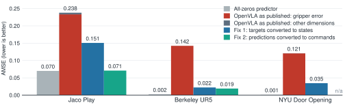

On three of the 20 Open-X datasets in MultiNet v0.1 (Jaco Play, Berkeley UR5 and NYU Door Opening), the gripper target is a relative command, the change of gripper closedness with 0 meaning “no change”, while OpenVLA's prediction is scored as an absolute open/closed state. We re-ran the MultiNet pipeline, reproduced the published OpenVLA AMSE within 0.3%, and found that this one dimension produces nearly all of the reported error. Scoring both sides in the same semantics lowers OpenVLA's AMSE by 37–87%.
In these three datasets the gripper action is a command: +1 close, −1 open, 0 no change (a continuous
change of closedness for NYU Door Opening). The Berkeley UR5 authors document this and note that
converting it to a state could make a policy easier to learn. OpenVLA's data pipeline does exactly that: among MultiNet's 20
datasets, these are the three whose transform applies rel2abs_gripper_actions, so the model
outputs the absolute gripper state. MultiNet's convert_action maps that output to
+1 closed / −1 open and compares it with the unconverted relative targets (commit 546a1c7;
the conversions were unchanged on main as of 12 November 2026).
A state-valued prediction cannot express “no change”, which is 75.7% of Jaco Play targets, 98.5% of Berkeley UR5 targets and 93.2% of NYU Door Opening targets. On Jaco Play and UR5 the converted prediction is always ±1 (0 of 7,838 and 0 of 10,156 steps are zero), so every “no change” step contributes a squared gripper error of exactly 1, whatever the policy does:
| Step | 1 | 2 | 3 | 4 | 5 | 6 | 7 | 8 |
| MultiNet target (command) | 0 | 0 | +1 | 0 | 0 | 0 | −1 | 0 |
| Correct gripper state, as OpenVLA outputs it | −1 | −1 | +1 | +1 | +1 | +1 | −1 | −1 |
| Squared error | 1 | 1 | 0 | 1 | 1 | 1 | 0 | 1 |
Schematic example, not data: a policy that tracks the gripper perfectly is still charged at every “no change” step.
These steps alone put a floor under the metric for any state-valued predictor: 0.757 / 4 = 0.189 on Jaco Play and 0.985 / 7 = 0.141 on Berkeley UR5, which is 79.5% and 98.8% of the published AMSE.
| Jaco Play | Berkeley UR5 | NYU Door Opening | |
|---|---|---|---|
| Test steps (equal to MultiNet's) | 7,838 | 10,156 | 2,209 |
| Published OpenVLA AMSE | 0.2386 | 0.1424 | 0.1209 |
| Reproduced AMSE (MultiNet pipeline, greedy) | 0.2380 (−0.28%) | 0.1424 (+0.001%) | 0.1209 (−0.03%) |
| Gripper targets that are “no change” | 75.7% | 98.5% | 93.2% |
| Gripper share of OpenVLA's AMSE | 98.0% | 99.9% | 99.7% |
| All-zeros predictor, MultiNet targets | 0.0699 | 0.0023 | 0.0013 |
| Fix 1: targets converted to states | 0.1508 (−37%) | 0.0222 (−84%) | 0.0345 (−71%) |
| Best constant predictor on fix-1 targets | 0.2370 | 0.1332 | 0.1381 |
| Fix 2: predictions converted to commands | 0.0709 (−70%) | 0.0190 (−87%) | n/a |
Table 1. Recomputed from archived per-step predictions of openvla/openvla-7b at revision 47a0ec7.

Fix 1, targets to states. Each episode's gripper targets are converted with OpenVLA's own
rel2abs rule (threshold 0.1), keeping MultiNet's sign convention. No robot state is needed,
so it applies to all three datasets. AMSE falls by 37%, 84% and 71%, and OpenVLA becomes 1.6×, 6.0× and
4.0× better than the best constant predictor.
Fix 2, predictions to commands. MultiNet's targets are kept and the predicted state is turned into a
command against the observed gripper state, a = clip(ŝ − sobs, −1, 1): the
gripper_is_closed flag on Berkeley UR5, and the finger joint binarized at the midpoint of its
range on Jaco Play. AMSE falls by 70% and 87%.
| Gripper handling in MultiNet v0.1 | Datasets | Count |
|---|---|---|
| Relative target vs. absolute prediction | Jaco Play, Berkeley UR5, NYU Door Opening | 3 |
| Absolute semantics on both sides | VIOLA, Columbia PushT, Stanford HYDRA and 10 others | 13 |
| No gripper dimension in the target | Berkeley Cable Routing, TOTO, ETH Agent Affordances | 3 |
| Torque target vs. state prediction (noted in MultiNet's code) | UCSD Pick and Place | 1 |
Three datasets were re-run with the model; VIOLA and Columbia PushT were checked on target statistics; the remaining 15 classifications rest on MultiNet's code and the dataset descriptions. The repository lists the code line for each.
In Berkeley UR5, NYU Door Opening and Columbia PushT, the last two steps of every record carry
is_last=True, so the loader turns the final step into a one-step episode (208, 98 and 28
loader episodes for 104, 49 and 14 records). Per-step AMSE is unaffected; episode-level quantities such
as the completion rate are.
Only OpenVLA is re-scored; per-step predictions of the other models are not public. Fix 2 on Jaco Play depends on the binarization threshold (0.090, 0.071 and 0.102 at 0.5, 0.75 and 1.0). OpenVLA does not beat the all-zeros predictor on every pose axis (UR5 roll; NYU Door Opening overall), but pose is only 0.05–2.0% of AMSE.
is_last step into its record before computing
episode-level metrics.
python experiments/offline/gripper_semantics.py prints every number in this note from the
archived predictions, on a CPU, in seconds.